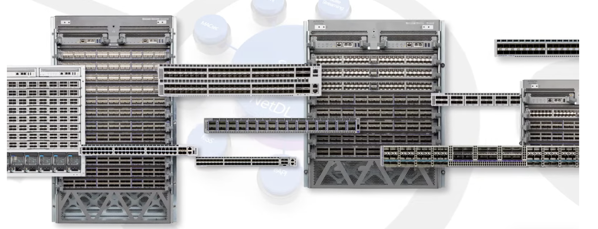

Arista UpstateNY Region Newsletter¶
Welcome to the June 2025 newsletter for Arista customers in the U.S. Upstate NY Region!
We welcome your feedback on the newsletter. If you have any ideas on what you want to see, please reach out to UpstateNY@arista.com
Upcoming Events¶
Arista hosts various events throughout the year for you! Members of our team organize these informative events to showcase Arista's ability to not only help improve your network, but to also assist by providing a set of tools to improve your operations! Click on the boxes below to be directed to Arista's website for lists of Webinars and Events.
-
Local Upstate NY Events
Date Name Description Location & Registration June 24 Arista Test Drive - Campus Automation Participants will walk through two labs: one to deploy an Arista campus from scratch and another introducing our wireless solution. Albany NY Register June 25 Arista Test Drive - Campus Automation Participants will walk through two labs: one to deploy an Arista campus from scratch and another introducing our wireless. Syracuse NY Register June 26 Arista Test Drive - Campus Automation Participants will walk through two labs: one to deploy an Arista campus from scratch and another introducing our wireless. Rochester NY Register June 27 Campus Roadshow Hands-on access to configure CV-CUE, CVaaS, AGNI, and your own AP. Deepen your understanding of Arista's Campus solutions. Buffalo NY Register
-
Global Webinars
We make is easy for you to view products that are of interest, all virtually! Technical memebers of the team showcase outstading explanation of the products. Click below to see our list of Webinars.
-
Global Events
Join us in person to get a closer look in our list of produts and solution, as well as get the chance to meet members of the team. Click below to see our list of ipcoming Events.
Software Updates¶
-
Softwares Versions Release Date EOS 4.34.0F
4.33.3F
4.32.5.1M
4.31.7.1MMay 5th, 2025
May 2nd, 2025
April 25th, 2025
April 25th, 2025CVP Portal 2025.1.1
Appliance 7.0.1
Sensor 1.1.0May 6th, 2025
January 28th, 2025
March 20th, 2025DMF 8.6.1
8.4.6March 4th, 2025
June 6th, 2025WLAN CV-CUE 18.0.0 December 6th, 2024 Arista NDR 5.2.4
AVA Sensor EOS-4.34.0FAugust 2024
March 2025TerminAttr 1.38.2 May 15th, 2025 For all code releases, click here
Software Advisories¶
-
To view more details, click the advisory links below.
Name Advisory Link Date ACL policies may not be enforced Advisory 0120 May 27, 2025 IPsec may exhibit unexpected behavior Advisory 0119 May 27, 2025
Update: June 4, 2025VLAN isolation and segmentation boundaries Advisory 0118 May 20, 2025 Remote-server credentials Advisory 0117 May 6, 2025
Update: May 20, 2025Time Bound Device Onboarding Advisory 0116 April 15, 2025 ZTP Admin Privileges Advisory 0115 April 15, 2025 Malicious Authenticated User Advisory 0114 April 15, 2025 EOS Secure VxLAN Advisory 0113 April 8, 2025 For a list of the most current advisories and notices, click Here
Product Updates¶
-

End of Sale notices are listed below.
Device Name End Of Sale Date Software End of Software Support for EOS 4.28
DMF and CCF Deployments on Accton/ Edgecore Switches
EOS-4.34 and later no longer supported on select switches
CloudVision Portal 2023.1 TrainMarch 14, 2025
January 31, 2025
January 15, 2025
December 20, 2024Module 7500R2 Series Linecards December 20, 2023 Access Points AP Model W-118 November 20, 2024 DMF Recorder Node DCA-DM-RA3
Service Node DCA-DM-SELJanuary 14, 2025
June 3, 2025Switches DCS-7020R Series December 20, 2024
-
New Releases of Arista devices are listed below.
Device More Information Release Date Arista SWAG Modern Stacking for Campus Q1 2025 Arista Multi-Domain Segmentation Service Arista MSS Q3 2024 Arista CV UNO CloudVision Universal Network Observability Q1 2024
Article #1 - How Do You Judge the Health of Your Network?s¶
By: Joe Mitri, Senior Systems Engineer, Upstate NY Region
As engineers, we have no shortage of metrics to measure the health of our networks. Maybe your inbox is quiet. The helpdesk isn’t chasing you down. Syslog looks clean. Nobody's asking for a maintenance window. Devices have been up for months—maybe even years. All signs point to a stable, well-behaved network. However, stability alone doesn’t tell the whole story.
What about security? Can that be used as a metric for good network health? I’d argue yes, absolutely. Just because nothing appears broken doesn’t mean your network isn’t vulnerable to being exposed. A “healthy” network on the surface could still be running outdated software and missing critical patches. In today’s environment, a strong security posture has to be part of how we define operational health.
So why don’t we all keep our devices as current as possible? In many cases, it’s not because we don’t want to. It’s because upgrades have historically been painful. With legacy network OS’s, a software upgrade often means disruption. Even when everything goes as planned, you could still see an impact. Sometimes just 30 seconds, but even that can be too long in environments that require 24/7 availability.
The good news is that this doesn’t have to be the tradeoff anymore. If you're running a modern network OS, like Arista EOS, upgrades don’t have to be a compromise. Arista Smart System Upgrade (SSU) gives you a way to upgrade software with no impact to connected hosts, even if they only have a single link. SSU keeps forwarding data during the upgrade, so users don’t notice a thing (< 100 ms). You can now treat software upgrades as a normal part of healthy operations without fear of outages.
As you evaluate your network’s health, make sure you’re not just measuring silence. Include upgradability in your assessment. Because a healthy network isn’t just quiet. It's secure.
Want to learn more about Smart System Upgrade (SSU)? Just reach out to your account team, we’d be happy to set up a live demo.
Article #2 - A switch is a switch is a switch” … or is it?¶
By: Jeramiah Pauly, Associate Account Manager, Upstate NY Region
Let’s face it, when it comes to networking, we all know the drill. The term “switch” is tossed around like it’s just one box to plug in and call it a day. After all, isn’t a switch just a switch? But what if I told you that a switch can be much more than a simple piece of hardware? In fact, the right switch can be the difference between a network that’s stuck in the past and one that’s ready for the future. The truth is, not all switches are created equal. Arista Networks provides the critical infrastructure for your network so that it doesn’t just survive—it thrives.
For years, network managers in Upstate New York have been trapped with legacy networking equipment that’s as complicated as it is expensive. The "one-size-fits-all" approach has led to endless subscription fees, complex configurations, and network downtime that simply shouldn’t exist in 2025. What Arista offers is not just another switch. For over 20 years, Arista has pioneered a new way of thinking about networking. Think to yourself, “Have I seen a movie on Netflix lately, posted a picture on Facebook or listened to a song on Spotify?” If so, you’ve already experienced the power of Arista Networks!
With Arista’s Extensible Operating System (EOS), switches are no longer just about connecting devices. They’re about automating network operations with CloudVision, optimizing performance, and simplifying management. In other words, Arista turned the humble switch into a tool that adapts and scales with your needs, not the other way around.
Why Arista? Simplification: Intuitive, automated solutions that reduce network complexity Flexibility: Open, scalable solutions that adapt to evolving business needs Security: Consistently orders of magnitude fewer regression bugs than any other network OS
Arista’s commitment to open standards and flexible, high-performance solutions means your network isn’t just built for today, it’s prepared for tomorrow. From zero-touch provisioning to seamless scalability, Arista’s portfolio is designed to reduce complexity while increasing reliability. So, next time you hear someone say “a switch is just a switch,” you’ll know. Arista is the world’s most advanced networking company. Period.
Want to learn more about EOS? Just reach out to your account team, we’d be happy to set up a live demo.
Feel Free to Reach Out To Us For Your Network Needs¶
We thank you for taking the time to read out newsletter today. Feel free to reach out to your SE or ASE for more information or questions regardsing your network operations. Until next month, have a good one!